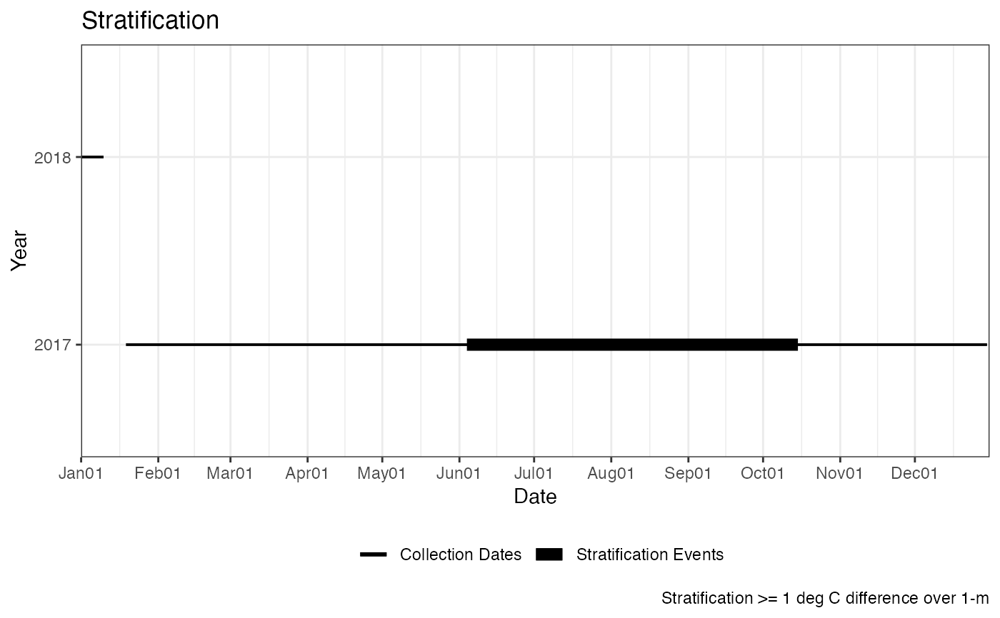
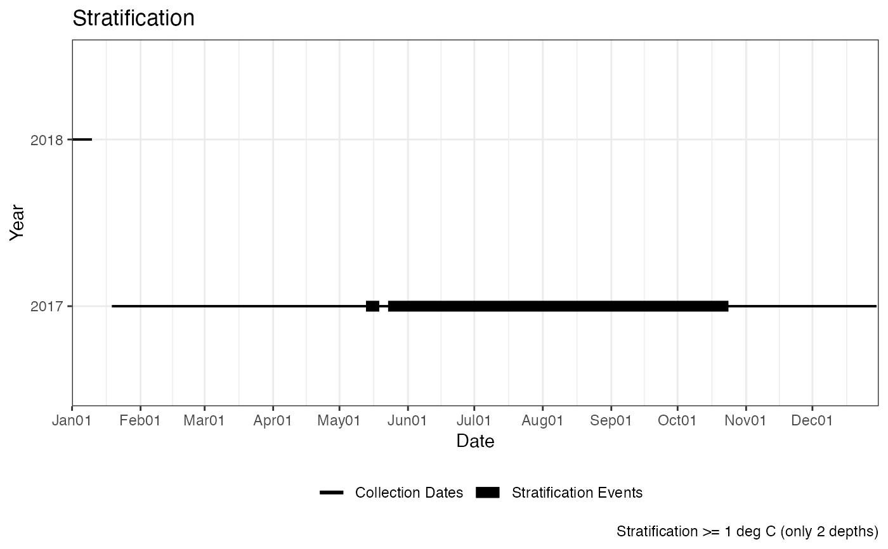

Calculates stratification on daily depth means.
stratification(
data,
col_date,
col_depth,
col_measure,
min_days = 1,
units_depth = "m",
units_measure = "C"
)data frame
Column name, Date
Column name, Depth
Column name, measurement for calculation
Minimum number of consecutive days to be classified as stratification. Default = 1.
Units for depth column (m or ft). Default = "m".
Unites for measurement column (C or F). Default = "C".
List with 3 elements, 2 data frames and a ggplot Stratification_Dates includes dates and T/F for Stratified. Stratification_Events includes a row for each stratified event along with start and end dates and number of days. Stratifcation_Plot is a ggplot with lines for each event by date (x) and year (y).
Uses the output of `daily_depth_means` and assumes units are degree Celcius and meters.
Calculation is defined as greater than or equal to a 1 degree (C) difference over 1-meter anywhere in the water column. **Unless** there are only 2 depths. If only 2 depths provided in the data it is assumed these are top and bottom measurements and depth is not considered. That is, if only 2 measurements then any difference greater than 1 degree (C) will be considered stratified.
A list is returned with two data frames and a plot.
The first data frame has the dates and TRUE or FALSE for stratification.
The second data frame has the start and end dates, time span, and minimum value for each stratification event.
The plot is a ggplot object with lines for each stratification event. The minimum value is shown on the plot for each plot as a red circle.
For the minimum value for each event the value, date, depth, and number of occurrences appears in the second data frame. Only the first value is shown.
Units should be metric (meters and celsius). If Imperial units are provided (i.e., feet and fahrenheit) they will be converted to metric units. Accepted abbreviations are m, ft, C, and F.
Input data is assumed to be a single lake location depth profile.
## Example 1, entire data set
# data
data <- laketemp_ddm
# Columns
col_date <- "Date"
col_depth <- "Depth"
col_measure <- "Measurement"
# Calculate Stratification
ls_strat <- stratification(data
, col_date
, col_depth
, col_measure
, min_days = 1 )
#> Warning: NAs introduced by coercion
# Results, Stratification Dates
head(ls_strat$Stratification_Dates)
#> Date Stratified_1
#> 1 2017-01-19 FALSE
#> 2 2017-01-20 FALSE
#> 3 2017-01-21 FALSE
#> 4 2017-01-22 FALSE
#> 5 2017-01-23 FALSE
#> 6 2017-01-24 FALSE
# Results, Stratification Events
ls_strat$Stratification_Events
#> Start_Date End_Date Year Time_Span
#> 1 2017-06-05 2017-10-16 2017 133 days
# Results, Stratification Plot
p_strat <- ls_strat$Stratification_Plot
p_strat <- p_strat + ggplot2::labs(caption = paste0("Stratification >= "
, "1 deg C difference over 1-m"))
print(p_strat)

#~~~~~~~~~~~~~~~~~~~~~
# Example 2, top and bottom only
# data
data <- laketemp_ddm
min_depth <- min(data[, col_depth], na.rm = TRUE)
max_depth <- max(data[, col_depth], na.rm = TRUE)
data_tb <- data[data[, col_depth] == min_depth |
data[, col_depth] == max_depth, ]
# Columns
col_date <- "Date"
col_depth <- "Depth"
col_measure <- "Measurement"
# Calculate Stratification
ls_strat_tb <- stratification(data_tb
, col_date
, col_depth
, col_measure
, min_days = 1 )
#> Warning: NAs introduced by coercion
# Results, Stratification Dates
head(ls_strat_tb$Stratification_Dates)
#> Date Stratified_1
#> 1 2017-01-19 FALSE
#> 2 2017-01-20 FALSE
#> 3 2017-01-21 FALSE
#> 4 2017-01-22 FALSE
#> 5 2017-01-23 FALSE
#> 6 2017-01-24 FALSE
# Results, Stratification Events
ls_strat_tb$Stratification_Events
#> Start_Date End_Date Year Time_Span
#> 1 2017-05-14 2017-05-20 2017 6 days
#> 2 2017-05-24 2017-10-25 2017 154 days
# Results, Stratification Plot
p_strat_tb <- ls_strat_tb$Stratification_Plot
p_strat_tb <- p_strat_tb + ggplot2::labs(caption = paste0("Stratification >="
, " 1 deg C (only 2 depths)"))
print(p_strat_tb)
